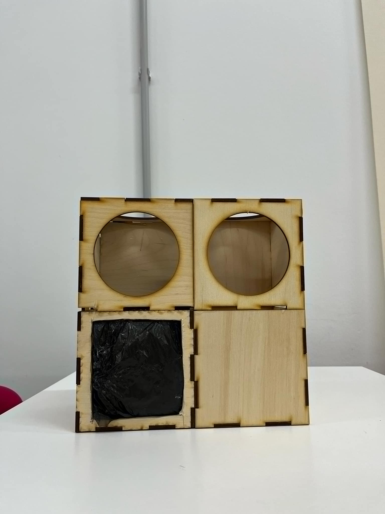

დამახარისხებელი ურნა AI-ით
ჩვენი პროტოტიპი იყენებს ხელოვნურ ინტელექტს ნარჩენების ავტომატური დახარისხებისთვის. ის აღჭურვილია სენსორებით და კამერით, რომლებიც საშუალებას აძლევს მას ამოიცნოს და დაახარისხოს სხვადასხვა ტიპის ნარჩენები.
- ავტომატური დახარისხება
- რეალურ დროში მონაცემთა ანალიზი
- ენერგოეფექტური დიზაინი
- მობილური აპლიკაციით მართვა